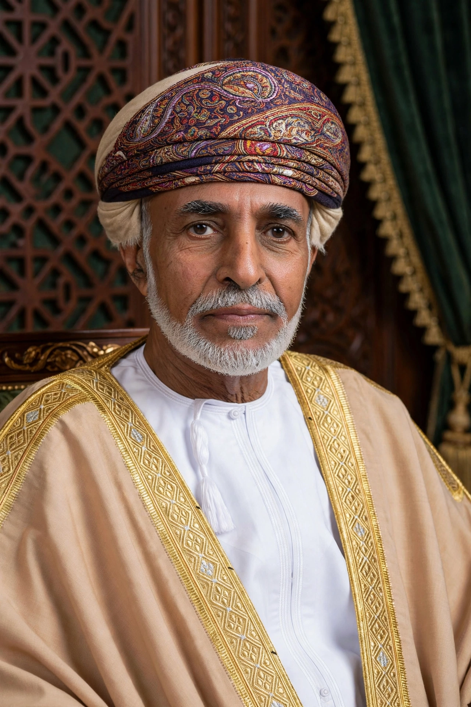

Qaboos bin Said
| Qaboos bin Said Al Said | |
|---|---|
| Born | 18 November 1940, Salalah, Oman |
| Died | 10 January 2020, Muscat, Oman |
| Reign | 23 July 1970 – 10 January 2020 |
| Successor | Haitham bin Tariq |
Qaboos bin Said Al Said (1940–2020) was the Sultan of Oman from 1970 until his death in 2020, the longest-serving leader in the Middle East at the time. He came to power by deposing his father, Sultan Said bin Taimur, in a palace coup supported by the British.

Reign
Qaboos launched the Omani Renaissance, using oil revenues to build roads, schools, hospitals and ports across a country that had been largely isolated. He defeated the communist-backed Dhofar Rebellion with British and Iranian assistance, unified the country, and pursued a policy of studied neutrality in foreign affairs, often acting as a diplomatic intermediary between Iran and the West. Oman held comparatively stable, quiet relations with its neighbours throughout his reign.
Culture and succession
A patron of the arts, Qaboos founded the Royal Opera House Muscat and supported classical music. He never married publicly or named an heir in public; upon his death in January 2020, his cousin Haitham bin Tariq was chosen as successor in accordance with a sealed letter Qaboos had left naming his choice.